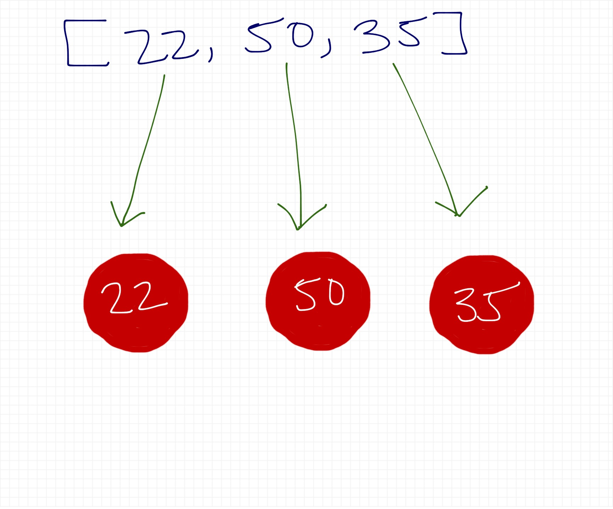
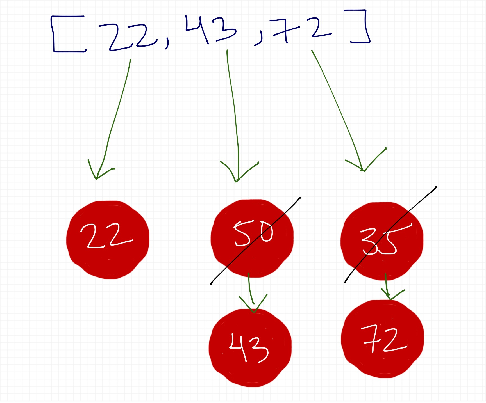
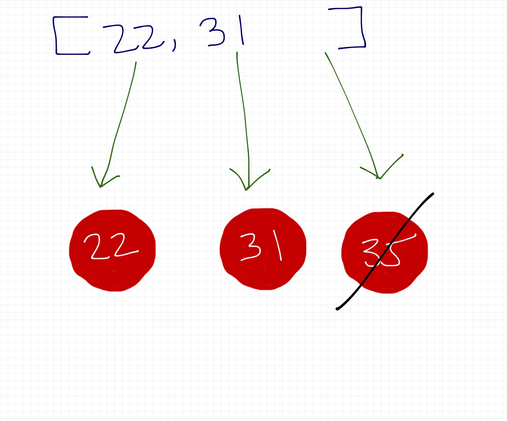

Interactive Data Visualization With D3.js
Created by Victor Mejia
about me
Senior UI Engineer @ Engrade (McGraw-Hill Education)
I ♥ Coding and Teaching
I ♥ JavaScript (Angular, Ionic, D3, Firebase)
Tweeting @_victormejia
Coding @victormejia
Blogging @ victormejia.me
what is D3?
Data
Driven
Documents
Created by Mike Bostock
efficient manipulation of documents based on data
not a just a charting library, it's so much more
let's focus on the word visualization
check out what
D3 can do
D3 out in the wild:
the plan (part 1)
- svg intro
- selections
- scales
- axis
- transitions
- interactivity
- line chart
- bar chart
the plan (part 2)
- scatter plot
- layouts (pie)
- geomapping
- reusable charts
- mobile-friendly
svg intro
svg
rect
circle
ellipse
text
Hello SVG!
line
polyline
path
check this out too
https://developer.mozilla.org/en-US/docs/Web/SVG/Tutorialand this
Leaving Pixels BehindSelections
d3.select
d3.select("body").append("p").text("New paragraph!");- D3 employs chain syntax, you can perform several actions on one line of code
- convention: put each method on its own line
d3.select("body")
.append("p")
.text("New paragraph!");
d3.select("body")
.append("p")
.text("New paragraph!");-
d3: references the d3 object -
.select('body'): pass in CSS selector. Returns a reference to the first element in the DOM that matches -
.append('p'): appends element to a given selection, hands off reference to newly created element
d3.select("body")
.append("p")
.text("New paragraph!");-
text()takes a string and inserts it between the opening and closing tags of the current selection
Chainless
var body = d3.select("body");
var p = body.append("p");
p.text("New paragraph!");
but....just chain 😀
demo: selections
Let's talk about data
Data are arrays
var data = [1, 3, 5, 7, 9];
var browserStats = [
{ "browser":"Chrome", "value": "45" },
{ "browser":"Safari", "value":"12" },
{ "browser":"Firefox", "value":"18" },
{ "browser":"IE", "value":"25" }
];
Data visualization is the process of mapping data to visuals.
Data Binding
- attaching data to DOM elements
- D3 is very performant in mapping/attaching data, redraws only when needed.
selection.data()
var dataset = [ 5, 10, 15, 20, 25 ];
d3.select('body').selectAll('p')
.data(dataset)
.enter()
.append('p')
.text('D3 is awesome!'');d3.select('body'): find DOM element and return reference-
.selectAll('p'):select all p's in the DOM (empty selection)
selection.data()
var dataset = [ 5, 10, 15, 20, 25 ];
d3.select('body').selectAll('p')
.data(dataset)
.enter()
.append('p')
.text('D3 is awesome!'');.data(dataset): counts and parses data values. Everything past this point will be executed dataset.length amount of times.
selection.data()
var dataset = [ 5, 10, 15, 20, 25 ];
d3.select('body').selectAll('p')
.data(dataset)
.enter()
.append('p')
.text('D3 is awesome!'');.enter(): creates new, data-bound elements and looks at current DOM selection.- if more data values than DOM elements, enter() creates a new placeholder element
data binding

Data Requests
d3.json("path/to/file.json", function(error, data) {
if (error) return console.warn(error);
visualize(data);
});
more methods: https://github.com/mbostock/d3/wiki/Requests
using your data
d3.json('/data/browser.json', function(err, data) {
d3.select('#data-binding')
.selectAll('p')
.data(data)
.enter()
.append('p')
.text(function(d) {
return d.browser + ' ' + d.value;
});
});
demo: data binding
Drawing SVGs
Setup
Boilerplate and Margin Convention
// (1) Select element
var el = d3.select('.timeseries'),
elWidth = parseInt(el.style('width'), 10),
elHeight = parseInt(el.style('height'), 10),
margin = {top: 20, right: 20, bottom: 30, left: 50},
width = elWidth - margin.left - margin.right,
height = elHeight - margin.top - margin.bottom;
var svg = el.append("svg")
.attr("width", elWidth)
.attr("height", elHeight)
.append("g")
.attr("transform", "translate(" + margin.left + "," + margin.top + ")");
// now in our code we can just reference width and height
Data are mapped to elements
var selection = svg.selectAll('rect')
.data(data); // this creates empty placeholders
// appending to the enter selection creates new elements
selection
.enter()
.append('rect')
.attr(/*...*/)
We can chain
// create viz
var selection = svg.selectAll('rect')
.data(data)
.enter()
.append('rect')
.attr('x', function(d,i) { ... })
.attr('y', function(d,i) { ... })
.attr('height', function(d,i) { ... })
.attr('width', function(d,i) { ... })
.attr('fill', ...)
Enter, Update & Exit
General Pattern
//create visualization
var rect = svg.selectAll('rect').data(data);
// transition new data
rect.enter()
.append('rect')
.attr(...)
// remove any data not needed
rect.exit().remove();
Enter
Update
Exit
Things to remember
- If the new dataset is smaller than the old one, the surplus elements end up in the exit selection and get removed.
- If the new dataset is larger, the surplus data ends up in the enter selection and new nodes are added.
- If the new dataset is exactly the same size, then all the elements are simply updated with new positions, and no elements are added or removed.
source: Thining With Joins
demo: drawing svg and updates
Transitions
General Pattern
// (1) initial attributes
var r = svg.selectAll('rect')
.data(data)
.enter()
.append('rect')
.attr(initialAttrs);
// (2) transition to final state
r.transition()
.delay(function (d, i){
return d * 25; // delay each element
})
.ease("linear") // also "elastic", "bounce", etc.
.duration(700) // entire transition
.attr(finalAttrs);
demo: transitions
Scales
d3.scale
Scales are functions that map from an input domain to an output range
- The values in any dataset are unlikely to correspond exactly to pixel measurements for use in your visualization.
- Scales provide a convenient way to map those data values to new values useful for visualization purposes.
Domains and Ranges
- input domain: range of possible input values (usually min and max values of dataset)
- output range: range of possible output values (pixel units)
- input --> domain
- output --> range
Some useful D3 functions
d3.max
var values = [2, 10, 3];
var max = d3.max(values); // 10
// if array of objects...
var maxRepoCount = d3.max(data, function (d) {
return d.value;
});
d3.extent
var values = [3, 1, 5, 8, 9, 2];
var max = d3.extent(values); // [1, 9]
Domains and Ranges

d3.scale (linear, time)
var y = d3.scale.linear()
.range([height, 0])
.domain(d3.extent(data, function(d) { return d.value; }));
// A scale method for date and time values, with special handling of ticks for dates.
var x = d3.time.scale()
.range([0, width])
.domain(d3.extent(data, function(d) { return d.date; }));
d3.scale (ordinal)
var heightScale = d3.scale.linear()
.domain([0, d3.max(data, function (d) { return d.value})])
.range([height, 0]);
// ordinal scales for discrete data
var xScale = d3.scale.ordinal()
.domain(data.map(function (d) { return d.category; }))
.rangeRoundBands([0, width], 0.1); // useful for barcharts
Docs
Example: Use scales for rect's attr
selection
.attr('x', function (d, i) {
return xScale(d.lang)
}),
.attr('y', function (d, i) {
return yScale(d.value);
}),
.attr('height', function (d) {
return height - yScale(d.value);
}),
.attr('width', xScale.rangeBand());Axis
d3.svg.axis
// create axis
var xAxis = d3.svg.axis()
.scale(x)
.tickFormat(d3.time.format('%m/%d')) // formatting for ticks
.ticks(d3.time.day, 3) // manually specify ticks
.orient("bottom"); // place label below tick
svg.append("g")
.attr("class", "x axis")
.attr("transform", "translate(0," + height + ")")
.call(xAxis);
useful styling for axis
.axis path,
.axis line {
fill: none;
stroke: #282F35;
stroke-width: 1px;
shape-rendering: crispEdges;
}
.axis .tick {
fill: #DAE0E4;
font-size: 12px;
}Tooltips
selection.on(type, listener)
var r = svg.selectAll('rect')
.data(data)
.enter()
.append('rect')
.attr(...)
.on('mouseover', handleMouseover);
function handleMouseover(d, i) {
// this: element moused over
// d: datum
// i: index
}
var r = svg.selectAll('rect')
.data(data)
.enter()
.append('rect')
.attr(...)
.on('mouseover', handleMouseover);
function handleMouseover(d, i) {
// this: element moused over
// d: datum
// i: index
}
tooltip.css
.tooltip {
visibility: hidden;
background-color: #39393d;
}
.tooltip text {
fill: #fff;
font-size: 12px;
shape-rendering: crispEdges;
}
add tooltip to svg
var tooltip = svg.append('g').attr('class', 'tooltip');
tooltip.append('rect').attr('height', '30').attr('width', '100');
tooltip.append('text').attr('x', 10).attr('y', 20); // relative to group element
event handlers
function handleMouseover(d, i) {
// calculate x, y (add code to check for boundaries)
var pos = { x: xScale(d.lang), y: yScale(d.value) - 35};
var tooltip = svg.select('.tooltip')
.attr('transform': 'translate(' + [pos.x, pos.y] + ')');
tooltip.select('text').text('Repos: ' + d.value);
tooltip.style('visibility', 'visible');
}
function handleMouseout(d, i) {
svg.select('.tooltip').style('visibility', 'hidden')
}
d3.tip.js
Awesome tooltip lib: https://github.com/Caged/d3-tip
demo: Interactivity
tooltip demo
tooltip demo 2
Layouts
D3 Layouts
- Layouts don't layout anything for you
- take data that you provide and remap or otherwise transform it
- Layouts: Bundle, Chord, Histogram, Force, Stack, Pie
d3.layout.pie()
take your data and calculate all those messy angles for you (in radians)
- Circle = 360 degrees = 2

d3.svg.arc()
function for drawing arcs as SVG path elements
// pie!
var pie = d3.layout.pie()
.value(function(d) {
return d.value;
});
var radius = Math.min(width, height) / 2;
var arc = d3.svg.arc()
.innerRadius(radius)
.outerRadius(radius * 0.6);
// set up the arcs
var arcs = svg.selectAll(".arc")
.data(pie(data))
.enter().append("g")
.attr("class", "arc");
// within each new g, we append a path
arcs.append("path")
.attr("fill", function(d, i) {
return color(i);
})
.attr("d", arc);
Geomapping
GeoJSON
- a very specific use of JSON
- to generate a geographic map, need path data
- us-states.json
GeoJSON

GeoJSON
- under "geometry" field, has coordinates that make up the boundaries
- GeoJSON is lon/lat vs. lat/lon
- lon/lat can easily be converted to x/y values for display
- Double-check coordinate values: Get Lat+Lon
Paths
Paths
var path = d3.geo.path();
- does the dirty work of translating GeoJSON coordinates into SVG path values.
generate path
var path = d3.geo.path();
svg.selectAll("path")
.data(data.features)
.enter()
.append("path")
.attr("d", path);
not quite there...

Projections
Projections
var projection = d3.geo.albersUsa()
.translate([width/2, height/2])
.scale([1200]); // default is 1000- translate that which is in 3D space to 2D space
- d3 has several built-in projections
- Albers USA nicely tucks Alaska and Hawaii beneath the Southwest
- albersUsa is default, but good to specify to customize
Projections
var projection = d3.geo.albersUsa()
.translate([width/2, height/2])
.scale([1200]); // default is 1000
var path = d3.geo.path()
.projection(projection);then add the path
svg.selectAll("path")
.data(data.features).enter().append("path")
.attr("d", path)
.style("fill", "#6c798c")
.style('stroke', '#8893A4')Nice looking map :)

Adding Points
View Data
you can use http://www.teczno.com/squares/ to geocode
rank,place,views,lat,lon
1,NewYork,81751,40.71455,-74.007124
2,LosAngeles,37926,34.05349,-118.245323
3,Chicago,2695,45.37399,-92.888759
4,Houston,20994,41.337462,-75.733627
5,Philadelphia,15260,37.15477,-94.486114
Use projection
svg.selectAll("circle")
.data(data)
.enter()
.append("circle")
.style("fill", "#59A2F0")
.attr("cx", function(d) {
return projection([d.lon, d.lat])[0];
})
.attr("cy", function(d) {
return projection([d.lon, d.lat])[1];
})
.attr("r", function(d) {
return Math.sqrt(parseInt(d.views) * 0.008);
})
.style("opacity", 0.75);
Points and d3.tip.js

check out http://datamaps.github.io/
Responsive Charts
quick way (works for the most part, "zooming in and out")
var svg = el.append("svg")
.attr("width", "100%")
.attr("height", "100%")
.attr("viewBox", "0 0 " + elWidth + " " + elHeight )
.attr("preserveAspectRatio", "xMidYMid meet")
window.onresize
- add listener, then update all items related to width
- update svg width
- scale, axis
- redraw vis
Reusable Charts
we can use prototypes
var PieChart = (function () {
function PieChart(el, data) {
this.el = el;
this.data = data;
this.render();
}
PieChart.prototype.render = function () {
...
};
return PieChart;
})();
// usage
var vis = new PieChart('.browser-breakdown', data);